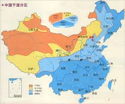

东部地区地势低平，以平原、丘陵为主，适宜农业和城市建设，而西部地区地势高峻，以高原、山地、盆地为主，地理环境相对恶劣，交通不便。东部的水资源丰富，气候温和湿润，是中国主要的农业区。西部则拥有丰富的矿产资源和独特的高原生态系统。
此外，东部地区由于靠近海岸，早期对外开放，经济活跃，工业和服务业高度集中，城市化水平较高，因此发展得比西部快。相反，西部因为内陆交通不便，发展相对缓慢，但近年来国家大力推动西部大开发战略，基础设施和经济都有显著提升。
长江是中国最长的河流，横贯东西，推动了中华文明的发展。黄河则被称为中华民族的母亲河，流经黄土高原，孕育了丰富的历史文化。